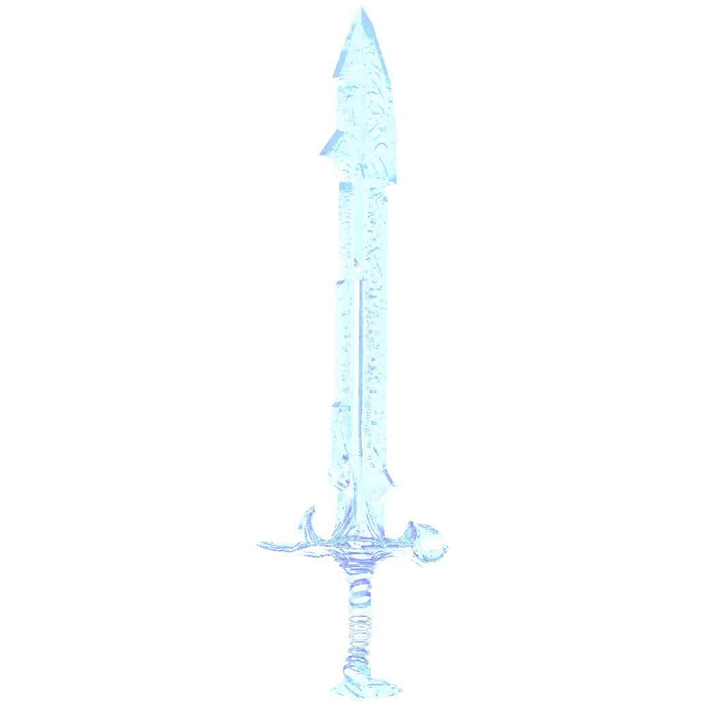

Primera aparición: Temporada 2 - capítulo 8
Usuarios: Kayn
Creador: Desconocido
Descripción: Una de las 12 armas divinas, una espada larga con un filo transparente hecha de la fuerza vital del usuario. Por cada persona que asesina recolecta su alma aumentando el poder del usuario. La espada se hizo con el poder de Thanatos por lo que cada alma que asesinas es como una recompensa para ti de parte del dios de la muerte. Una vez fusionado con la espada, el usuario gana un poder abrumador, pero en caso de no poder acabar con el oponente antes de agotar tu fuerza vital, el usuario perderá su consciencia y la espada se quedará con el control total de cuerpo del huésped.